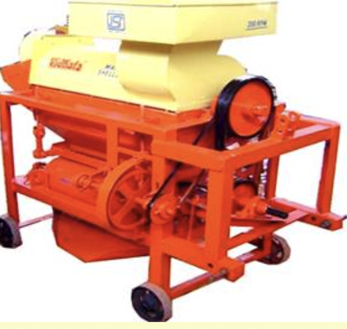

9.0 THRESHING EQUIPMENT
- 9.1.Multi- Crop Thresher
- 9.2. Axial-Flow Paddy Thresher
- 9.3.PEDAL OPERATED PADDY THRESHER
- 9.4.Maize Dehusker/Sheller
9.1 MULTI -CROP THRESHER

Features
The thresher consists of rasp bar threshing cylinder, oscillating sieves, concave and winnowing and cleaning attachment. The rasp-bar cylinder is made of cast iron rings, sheet metal and toothed racks and is fitted on the main shaft running on two heavy pedal bearings. Various pulleys of different sizes are fitted on this shaft to transmit power to winnowing and fan attachment. Adjustments for cylinder and blower speeds and concave clearance are provided to make the machines suitable for threshing various crops. It has a safe feeding chute attached to it as per BIS standard. I hilly tracts small power threshers need to be introduced.
Specifications:
| Diameter of beater shaft (mm) | : 42 |
| Length of beater shaft (mm) | : 1400 |
| Diameter of cylinder with rasp-bar (mm) | : 416 |
| Length of the cylinder(mm) | : 560 |
| Height of hopper from ground level (mm) | : 1500 |
| Capacity (kg/h) | : 600-1000 |
| Power requirement (hp/kW) | : 7.5/5.6 |
Uses:
It is suitable for threshing paddy, ragi, jowar, maize, sunflower, wheat, mustard etc .
Cost of Machine : Rs.60,000 – 80,000/-
9.2 AXIAL- FLOW PADDY THRESHER

Features
It consists of a threshing cylinder, concave, cylinder casing, cleaning system and feeding chute. In axial flow concept, the crop is fed from one end, it moves axially and the straw is thrown out from the other end after complete threshing of the crop. During threshing, the crop rotates three and half times around the cylinder and all the grains get detached. The threshing cylinder is of peg type. The casing of the thresher has 7 louvers for moving.
Specifications:
| Length (mm) | : 2030 |
| Width (mm) | : 3050 |
| Height (mm) | : 1960 |
| Feeding device | : Feeding chute, manually |
| Length of feeding chute (mm) | : 905 |
| Width of feeding chute (mm) | : 110 |
| Type of cylinder | : Spike tooth |
| Cylinder size, tip diameter x length(m m) | : 770 x 1500 |
| Length of concave (mm) | : 840 |
| Width of concave (mm) | : 570 |
| Concave clearance (mm) | : 18-21 |
| Type, size and number of blowers | : Aspirator type, two blowers of 400 mm diameter and 160 mm width |
| Weight (kg) | : 730 |
| Power requirement(hp/kW) : | : 35/26.25, tractor PTO |
Uses:
It is used for threshing of paddy crop.
Cost of Machine : Rs.80,000/-
9.3 PEDAL OPERATED PADDY THRESHER

Features
It consists of wire-loop type threshing cylinder, power transmission system, mild steel sheet body and foot pedal. The threshing cylinder consists of wire-loops of ‘U’ shape embedded in wooden or metallic strips joined to two discs. A shaft carries the threshing cylinder and is connected to the transmission system. The transmission system consists of meshed gears or sprocket-chain mechanism. The larger gear or sprocket is connected to foot pedal/bar with links. The foot pedal/bar is always in raised position. On pressing the pedal the threshing cylinder starts rotating. For continuous rotation of the cylinder, the pedal is lowered and raised repeatedly. For operation, paddy bundle is held in hands and earhead portion of the crop is placed on the rotating cylinder. The wire-loops hit the earheads and grain get detached from the rest of the crop.
Specifications:
| Dimensions (LxWxH) (mm) | : 1250 x 650 x 630 |
| Cylinder size (mm) | : 400 diameter x 600 length |
| Loop wire diameter (mm) | : 4 |
| Number of wire loops | : 44 |
| Number of wire loop strips | : 12 |
| Transmission system | : Pedal Crank mechanism with 1:4 gear ratio |
| Weight (kg) | : 36 |
| Power source | : One persons |
Uses:
It is used for threshing of paddy crop. It easy to operate and does not require much effort in its operation as it is operated by foot.
Cost of Machine : Rs.10000/-
9.4 MAIZE DE-HUSKER/SHELLER
Features
Maize de-husker cum sheller are of two types namely, spike tooth type and axial flow type. In the spike tooth type sheller, pegs are staggered at varying heights for better shelling efficiency. The spikes are placed in 6 rows with 6 spikes in each row. The sieves have 1.25 cm diameter opening to separate the shelled maize from husk. In axial flow type threshers, pegs are provided on the cylinder and louvers were provided on the upper periphery of the drum to convey the crop to the outlet.
| Specification: | Spike tooth type | Axial type |
|---|---|---|
| Length (mm) | 1765 | 3400 |
| Width (mm) | 1065 | 1140 |
| Height (mm) | 1570 | 2190 |
| Dia. of threshing cylinder (mm) | 480 | 495 |
| Length of threshing cylinder (mm) | 325 | 1460 |
| Cylinder speed (m/s) | 16.4 | 13.7 |
| Type of threshing drum | Spike tooth | Peg type |
| Type of blower | Centrifugal | Centrifugal |
| No of sieves | 2 | 3 |
| Opening size of upper sieve (mm) | 12 | 12.5 |
| Opening size of middle sieve (mm) | - | 7 |
| Opening size of lower sieve (mm) | 2 | 3 |
| Concave clearance (mm) | 50 | 50 |
| Opening size of concave (mm) | 5x5 | 5.1 x 5.1 |
| Moisture content of cobs (%) | 12-28 | 12-28 |
| Threshing Capacity(kg/hr) | 450-650 | 1200-2800 |
| Power source (hp/kW) | 35/26, Tractor | 35/26, Tractor |
Uses:
It is used for threshing of maize cobs.